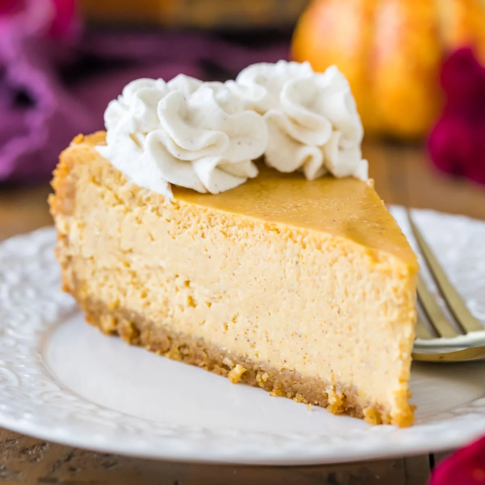

THANKS FOR STOPPING BY!
You've found your way to Cooking with Couto, my very own personal cookbook-website. I'm Gio- full name Joseph Giovanni Couto- and I love to cook. Not only is it the only form of art you can *physically* enjoy, but it's also an important life skill to have! If you're looking to find some inspiration for your next meal, you've come to the right place.
If you're a college-age soon-to-be-independent young adult like me, you'll have found that cooking is essential if you want to stay afloat in this economy. Fast food is only getting more and more expensive with time, and home cooking remains the cheaper option. If you're new to the art, look no further- these recipes are super easy to follow.
They all come straight from my very own cookbook, and I've taste-tested them to ensure they're worth your time and effort. (They are.) If you're looking for a place to start, just check out this week's FEATURED recipes below. You'll love them!
FEATURED RECIPES
World-Famous Banana Bread
Autumn Pumpkin Cheesecake